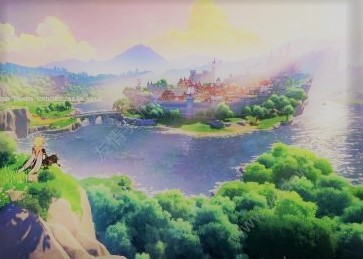

可爱的马儿是我的生肖
未明龙骨骏，幸得到神州。
自有千金价，宁忘伯乐酬。
虽知殊款段，莫敢比骅骝。
若遇追风便，当轩一举头。
霸气的天蝎是我的星座
天蝎座也是完美主义者，极端主义者，要么破碎，要么完美，不要中间。
天蝎座是疯子，但是天蝎疯的实在，每个没心没肺的天蝎，都有一段为某人掏心掏肺的曾经。
天蝎座对爱的人会付出自己的全部，而且天蝎座最痛恨的就是“背叛”！
天蝎座，生于秋深。性喜静，意清幽。爱之切，怨亦深。本质轻名利，但拥有成名得利的天赋。
天蝎座多恩怨分明，黑白绝不混肴。犹如包公，宁可得罪众官，也要奖惩公道。
有关我的绰号
No1. 皮蛋：我妈小时候经常叫我蛋蛋，但后来被我的同学听说，于是各种各样的蛋外号就来了，不知道怎么的，我就拥有了一个固定的绰号----皮蛋。
No2.洋芋：莫名其妙之间被起的绰号，刚开始我还不知道reason,后来才发现把自己名字中间那个字去掉之后的谐音叫洋芋（同学想象力太牛了）。
我美丽的家乡----甘肃天水武山
武山县位于甘肃省东南部，属天水市，地处秦岭山地北坡西段与陇中黄土高原西南边缘复合地带，位于东经104º34′25″一105。8′30″，北纬34º25′10″一34º57′16″之间。海拔在1365—3120米之间，属温带大陆性半湿润季风气候。渭河及其5条支流分布均匀。东汉置新兴县，宋改宁远县，1914年改武山县。以县西有武成山得名。 武山县辖6镇9乡344个行政村、8个居委会，总面积2011平方公里，总耕地63.26万亩，常住人口44.11万人（2017年末）[1]。境内有水帘洞、木梯寺、老君山森林公园等景点，曾获得“中国韭菜之乡”、“中国民间文化艺术之乡”、“全国武术之乡”等称号。
个人兴趣爱好
-
运动类
乒乓球：虽说不是高手，但还是会一点，比如旋球、杀球。
羽毛球：打得一般，但还是可以来几个回合。
篮球和足球：只能当作兴趣罢了，哈哈哈。
-
棋牌类
象棋：自认为玩得还说得过去，但在高手面前还是小菜鸡。(五子棋咋还是不说了）
斗地主：以前手机上的“必备神器”，手气经常爆棚。
麻将：相信这个许多同学都不会了吧，嘿嘿嘿。
狼人杀和三国杀都挺溜的，不服来战。
-
娱乐类
听音乐：特别喜欢听古风和日系的歌曲（但本人的的确确是个没有音乐细胞的人）。
追番：特别喜欢国漫中的打斗场景，尤其是雾山五行（感觉拍的特棒）。
看小说：以前喜欢玄幻的，后来就改成科幻了（《三体》----我的最爱）。
-
游戏
原神
书籍
特别喜欢余华的作品：《活着》、《兄弟》、《第七天》等。
关于余华：余华（1960年4月3日-），中国当代作家，生于浙江杭州，中国作家协会第九届全国委员会委员，现就职于杭州文联。余华的早期小说主要写血腥、暴力、死亡，写人性恶，他展示的是人和世界的黑暗现象。他小说中的生活是非常态、非理性的，小说里的人物与情节都置于非常态、非理性的现实生活之中。
经典语录
你千万别糊涂，死人都想活过来，你一个大活人可不能去死。
人只要获得高兴，穷也不怕。
人是为了活着本身活着，而不是为了活着之外的任何事情而活着。
如果你想要联系我：
Phone---------18893983706
Wechat------- ywy18893983706
QQ------------3181459376
Email----------3181459376@qq.com